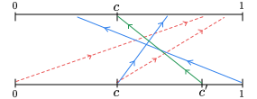
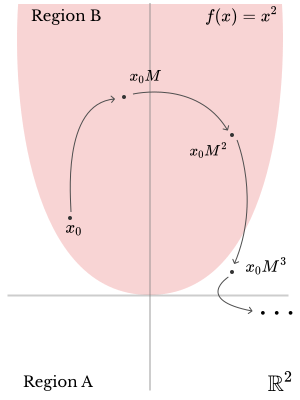
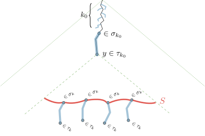
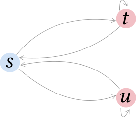

|
Publications by Theme
Dynamical Systems
Dynamical systems are a subject classically studied in mathematics. Broadly it is the study of orbits of a given map \(f\ :\ X\to X\),
\[
\mathcal O(f,x_0):=\bigg\{\underbrace{f^n(x_0)}_{f\text{ applied \(n\) times}}\ :\ n\in\mathbb{N}\bigg\},
\]
where \(X\) is some space with appropriate properties.
What kind of properties can we decide, and for what kind of dynamical systems? – Is the basic question.
Piecewise Affine Maps
|
 |
Here \(X=[0,1)\) is the half-open unit interval, and \(f\) is a piecewise affine map, e.g.
\[
f(x):=\begin{cases}
a_1 x + b_1 & \text{if } 0\le x < c,\\
a_2 x + b_2 & \text{if } c\le x < 1.
\end{cases}
\]
where \(a_i, b_i, c\) are rational constants. It is not known whether there is a procedure to decide reachability for such dynamical systems, even if there are only two pieces as above. With the coauthors below, we made some progress in a restricted version of this problem.
|
Linear Maps
|
 |
Here \(X=\mathbb{R}^n\) and \(f\) is a linear map. The basic open question in this area is Skolem's Problem. This is the question whether there is a procedure that inputs a linear map, a point in space and a hyperplane, and decides if the orbit of the map intersects the given hyperplane. Equivalently, given a \(k\times k\) matrix \(M\) with rational entries is there a procedure to decide the following sentence:
\[
\exists n\in\mathbb{N}\qquad \left(M^n\right)_{1,k} = 0.
\]
With the coauthors below we have considered adjacent questions about these dynamical systems.
|
The Power of Positivity
Toghrul Karimov, Edon Kelmendi, Joris Nieuwveld, Joël Ouaknine, James Worrell
Proceedings of the 38th Annual ACM/IEEE Symposium on Logic in Computer Science (LICS 2023)
Computing the Density of the Positivity Set for Linear Recurrence Sequences (arxiv) (doi)
Edon Kelmendi
Proceedings of the 37th Annual ACM/IEEE Symposium on Logic in Computer Science (LICS 2022)
( Distinguished paper award. Invited to the LMCS special issue for LICS. )
What's Decidable About Discrete Linear Dynamical Systems? (arxiv) (doi)
Toghrul Karimov, Edon Kelmendi, Joël Ouaknine, James Worrell
In Principles of Systems Design. Lecture Notes in Computer Science, vol 13660.
(Thomas Henzinger Festschrift)
Deciding \(\omega\)-Regular Properties on Linear Recurrence Sequeneces (arxiv) (doi)
Shaull Almagor, Toghrul Karimov, Edon Kelmendi, Joël Ouaknine, James Worrell
Proceedings of the ACM on Programming Languages, Volume 5, Article No.: 48 (POPL 2021)
Invariants for Continuous Linear Dynamical Systems (arxiv) (doi)
Shaull Almagor, Edon Kelmendi, Joël Ouaknine, James Worrell
Proceedings of the 47th International Colloquium on Automata, Languages, and Programming (ICALP 2020)
Logics
|
 |
In Monadic Second Order Logic (MSO) over the full infinite binary tree, one is allowed to quantify over the set of nodes, and also over subsets of nodes, as well as use the ancestor-descendent relation. Rabin's theorem (building on the analogous theorem for MSO on words by Büchi) says that this logic has a decidable theory. These two theorems are a kind of cornerstone of the field, bringing together logics, automata, and games.
With the coauthors below we have studied certain extensions of this logic with a probability quantifier, adding a concept for almost all. In this and the successor work we show that one cannot improve much on Rabin's and Büchi's theorem.
|
Extensions of \(\omega\)-Regular Languages (arxiv) (doi)
Mikołaj Bojańczyk, Edon Kelmendi, Rafał Stefański, Georg Zetzsche
Proceedings of the 35th Annual ACM/IEEE Symposium on Logic in Computer Science (LICS 2020)
Emptiness of Zero Automata is Decidable (arxiv) (doi)
Mikołaj Bojańczyk, Hugo Gimbert, Edon Kelmendi
In Proceedings of the 44th International Colloquium on Automata, Languages, and Programming (ICALP 2017)
Automata and Games
|
 |
Stochastic games are a model for competitive scenarios with uncertainty. They are also an interesting theoretical tool that can be brought to bear on problems in logics and automata.
With the coauthors below we have studied games where the players also have imperfect information (the more realistic scenario). These objects are rather computationally difficult: in order to find the optimal move, you have to calculate the possibilities for the current position.
|
Submixing and Shift-Invariant Stochastic Games (arxiv)
Hugo Gimbert, Edon Kelmendi
International Journal of Game Theory (IJGT); to appear.
Value Iteration for Simple Stochastic Games: Stopping Criterion and Learning (doi)
Julia Eisentraut, Edon Kelmendi, Jan Křetínský, Maximilian Weininger
Information and Computation, Volume 285, Part B, 104886 (Inf. Comput. 285)
Value Iteration for Simple Stochastic Games: Stopping Criterion and Learning Algorithm (arxiv) (doi)
Edon Kelmendi, Julia Krämer, Jan Křetínský, Maximilian Weininger
In Computer Aided Verification. Lecture Notes in Computer Science, vol 10981 (CAV 2018)
Stamina: Stabilisation Monoids in Automata Theory (pdf) (github) (doi)
Nathanaël Fijalkow, Hugo Gimbert, Edon Kelmendi, Denis Kuperberg
In Implementation and Application of Automata. Lecture Notes in Computer Science, vol 10329 (CIAA 2017)
Deciding Maxmin Reachability in Half-Blind Stochastic Games (arxiv) (doi)
Edon Kelmendi, Hugo Gimbert
In Symposium of Algorithmic Game Theory. Lecture Notes in Computer Science, vol 9928 (SAGT 2016)
Deciding the Value 1 Problem for Probabilistic Leaktight Automata (arxiv) (doi)
Nathanaël Fijalkow, Hugo Gimbert, Edon Kelmendi, Youssouf Oualhadj
Logical Methods in Computer Science Volume 11, Issue 2 (LMCS)
Two-Player Stochastic Games with Perfect and Zero Information (pdf)
Edon Kelmendi
PhD thesis. University of Bordeaux
Common Threads
There are some underlying threads that tie the seemingly separate themes above. Here are the most obvious ones:
( Games → Logic ) Certain two-player stochastic games were used to prove that the weak fragment of MSO+\(\nabla\) is decidable in the ICALP 2017 paper.
( Probabilistic Automata ⇆ Dynamical Systems ) A probabilistic automaton with one letter alphabet is just a linear dynamical system. Moreover the converse is also true, at least with respect to reachability questions.
( Logics ⇆ Dynamical Systems ) In the LICS 2020 paper we studied the theories of families of extensions of MSO with certain desirable closure properties, while in the POPL 2021 paper we looked at theories that one obtains by extending MSO with a single unary predicate which can be constructed from the orbit of the system.
( Piecewise Affine Maps ⇆ Linear Dynamical Systems ) Both hide important information about diophantine approximations of certain transcendental numbers.
|